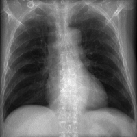
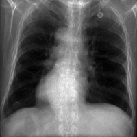
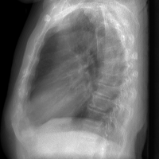
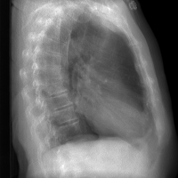
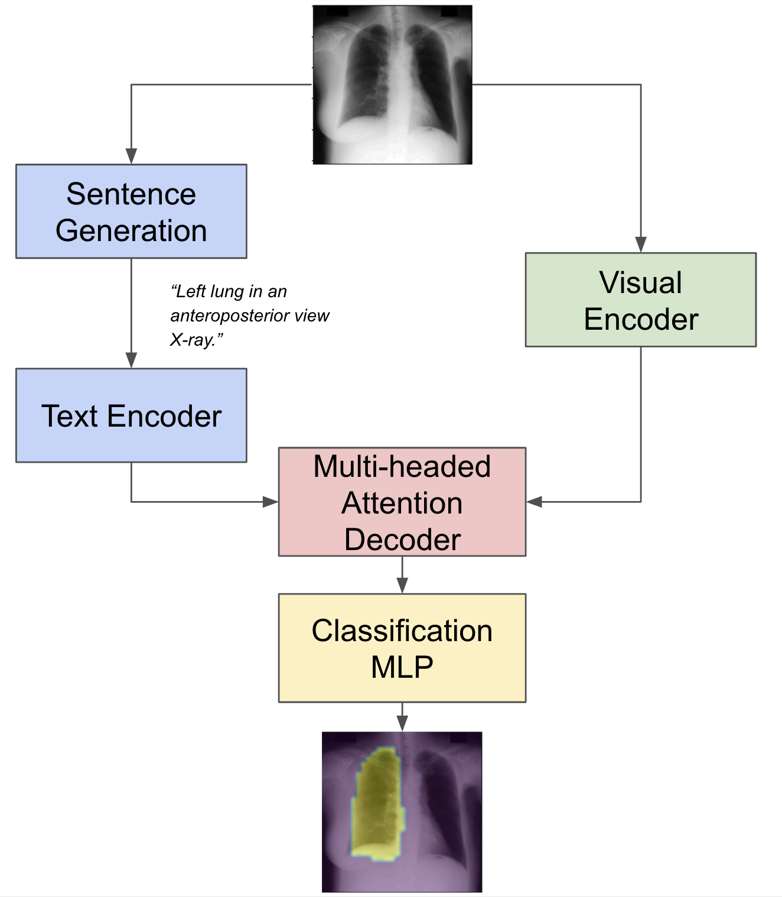
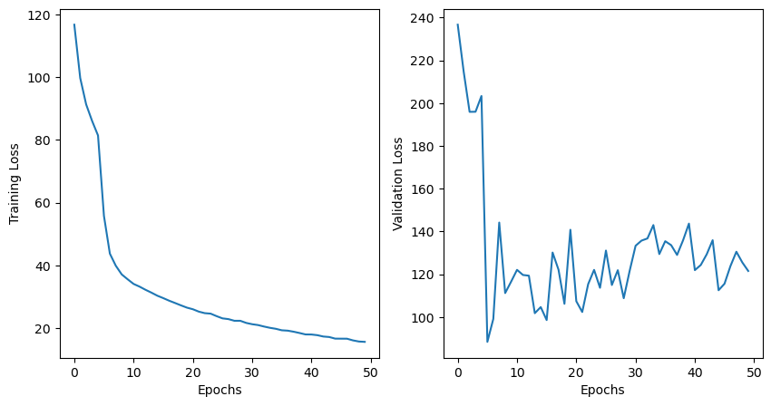
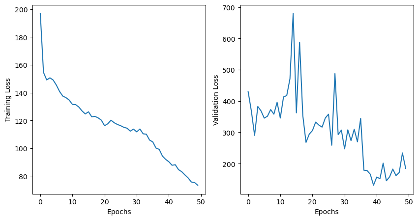
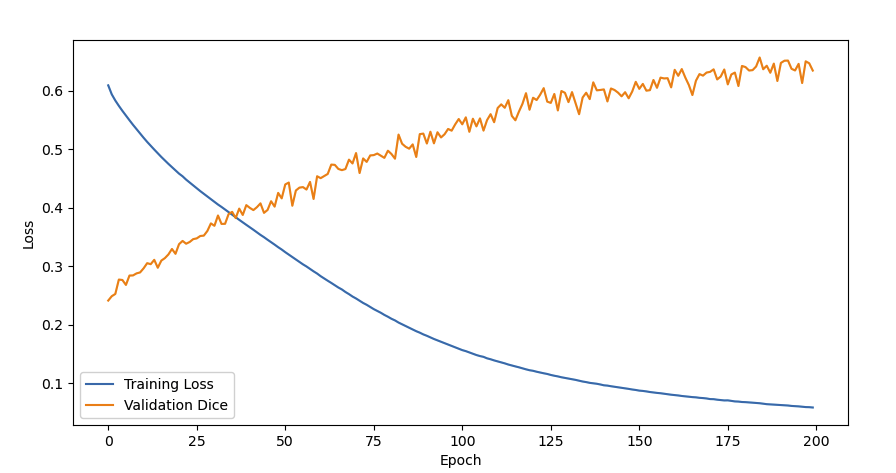

Methods and Experiments
In this section we will discuss the methods we used to generate our
dataset, the model architecture we chose, and the training process. We trained
two models: a hybrid Vision Transformer (ViT) model and a baseline U-Net model
to use as a comparison baseline.
Training Dataset Generation




To train and evaluate our synthetic X-ray segmentation, we begin by generating 2D DRR’s from annotated 3D CT scans from TotalSegmentator. This dataset provides 1228 high resolution CT scans of various anatomical regions with 118 labelled organ and tissue segmentations per scan. We focused on scans of the thoracic region, that is the region of the body that spans the chest area: lungs, heart, ribcage, and spine. We parsed the metadata file provided with the dataset to identify relevant scans. Each scan’s segmentations were originally stored as separate files per anatomical label.
We employed the DiffDRR library to generate high fidelity X-ray projections from the
3D CT volumes. To enable gradient-based learning for medical imaging tasks, we leverage DiffDRR,
an open-source differentiable renderer that efficiently generates digitally reconstructed
radiographs (DRRs) and computes their derivatives with respect to image geometry parameters.
Built on PyTorch, DiffDRR exploits GPU-accelerated tensor operations and automatic
differentiation to provide a fast and flexible framework for incorporating DRR generation as a
differentiable operator
[3]. This capability makes it particularly well-suited for deep learning
applications such as image reconstruction, pose estimation, and slice-to-volume registration.
Specifically, we used a DRR renderer initialized with each CT volume and
its corresponding segmentation map. For each scan, we generated DRR’s from four cardinal
views: AP (Anterior-Posterior), PA (Posterior-Anterior), LLAT (Left lateral), and RLAT
(Right Lateral).
Model Choice

To perform anatomical segmentation on synthetic X-ray images, we implemented a hybrid Vision Transformer (ViT) architecture that incorporates a pretrained BERT backbone for cross-modal text conditioning. We trained two versions of ViTALSeg: one using standard inputs, and another augmented with geometric transformations including rotations, translations, and scaling. The purpose of these augmentations was to encourage the model to learn semantically meaningful anatomical representations rather than relying on spatial memorization of organ positions.
Data Preparation
The input to our model is a 3D synthetic X-ray volume of shape 200×200×118, where each of the 118 channels represents a binary segmentation mask for a specific anatomical structure. For example, img[:, :, 1] represents the mask corresponding to the spleen. We treat each slice as an individual data point, forming a dataset of 118 examples per scan.
Each data point consists of:
- The full synthetic X-ray scan (200×200)
- A corresponding binary mask highlighting a specific organ or structure
- A natural language prompt describing the anatomical structure and viewpoint, such as: “Spleen in an anteroposterior view X-ray.”
This formulation enables text-conditioned training, where the model must segment a structure based on the provided prompt.
ViTALSeg was trained on roughly 37,500 datapoints, including anterior-posterior, posterior-anterior, and 45 degree offsets from those two views. The TotalSegmentator dataset contains 250 chest scans. Each CT scan contributed a total of 6 views and around 25 nonzero masks. Augmentations and scaling were applied to views for the version of ViTALSeg trained with augmentations.
Text Encoder
We employ a pretrained BERT encoder from Hugging Face's Transformers library to
process the textual prompts
[4]. The model uses 12 transformer layers with a hidden size
of 768. To retain general language representations, we freeze the first 8 layers
during training, fine-tuning only the final layers for the segmentation task.
The text inputs are first tokenized and padded to a maximum length of 256. These token sequences are then passed through the BERT encoder, resulting in contextualized embeddings for each token. These embeddings are later used as keys and values in the cross-attention mechanism of the vision decoder.
Visual Encoder
The visual encoder processes the X-ray image into a sequence of patch tokens, capturing both spatial and semantic features. It begins with a series of convolutional layers to project the input into 32×32 spatial patches, where each patch represents an 8×8 pixel region.
Each patch is then embedded into a vector and supplemented with a learnable positional encoding to preserve spatial structure. The encoder processes these tokens across multiple transformer layers, increasing the embedding dimension progressively from 96 → 192 → 384 → 768, forming a hierarchical visual representation. These features are passed to the decoder for integration with text embeddings.
Vision Decoder
The vision decoder fuses the image and text features using a series of multi-headed cross-attention layers. At each level of the visual hierarchy, the decoder uses the image tokens as queries, and the BERT-derived text embeddings as keys and values. This enables cross-modal attention, aligning the visual features to the text prompt.
Each attention head independently learns to focus on different aspects of the input, and the outputs are combined to capture diverse semantic relationships. The mathematical formulation for a single attention layer is:
\[
\text{Attn}(Q_{\text{img}}, K_{\text{t}}, V_{\text{t}}) =
\text{softmax}\left(\frac{Q_{\text{img}} K_{\text{t}}^\top}{\sqrt{d_k}}\right) V_{\text{t}}
\]
This cross-attention mechanism is applied across multiple levels of visual features, starting at lower embedding dimensions (e.g., 96) and continuing through to the full representation at 768. After each attention block, the output is element-wise added to the next stage of visual features, progressively refining the alignment between text and image.
This multi-scale attention strategy allows the model to learn general low-level features at shallow depths, and more detailed, task-specific features at higher levels.
Classification Multi-Layer Perceptron
The final fused features are passed to a classification head composed of two MLPs:
- Binary Segmentation MLP: Predicts the presence of the anatomical structure described in the prompt.
- Global Count MLP: Predicts the number of patches containing the structure.
This dual-output design allows the model to support both localization and quantification tasks from the same architecture.
Training Results
The binary segmentation loss measures how well the model classifies each patch in the image containing the structure (1) or not (0). We employ a sigmoid focal loss that is useful for object detection tasks and helps especially in cases where the structure of interest is small or localized such as this segmentation task.
\[
\mathcal{L}_{\text{focal}} = -\frac{1}{N} \sum_{i=1}^{N} \left[
\alpha (1 - \hat{b}_i)^\gamma b_i \log(\hat{b}_i)
(1 - \alpha) \hat{b}_i^\gamma (1 - b_i) \log(1 - \hat{b}_i)
\right]
\]
The count loss is just a simple mean squared error (MSE) loss across the counts per patch. We also employ a consistency loss to ensure that the local patch level predictions from the binary counts are globally consistent with the total predicted count.
\[
\mathcal{L}_{\text{count}} = (\hat{c} - c)^2
\]
Consistency Loss:
\[
\mathcal{L}_{\text{consist}} = \frac{1}{N} \sum_{i=1}^{N}
s_i \cdot \left| \hat{b}_i - \text{clamp} \left( \frac{\hat{c}}{N}, 0, 1 \right) \right|
\]
Total loss:
\[
\mathcal{L}_{\text{total}} =
\mathcal{L}_{\text{focal}} +
0.6 \cdot \mathcal{L}_{\text{count}} +
0.8 \cdot \mathcal{L}_{\text{consist}}
\]
Our final training loss for our model with augmentations was: 70.2889
Our final training loss for model without augmentations was: 15.5772
Our validation loss plotted below is the validation loss on the real X-rays
discussed in the Results and Analysis section.

The above figure is the model trained with no augmentations.

The above figure is the model trained with augmentations.
We ended up fine tuning the model further for another 30 epochs
but have unfortunately lost the training plot. In the end, the model trained
with augmentations ended up with a lower loss in both training and validation than
the model trained without augmentations.
Baseline Model Choice
The second model follows a U-Net style encoder-decoder CNN structure,
enhanced with a multi-scale context module. It inputs a 256 * 256
single-channel X-ray and outputs a 256 * 256 segmentation map with 118
channels (one per class). Since an X-ray is a 2-D projection of 3-D
anatomy, several organs can occupy the same pixel column. Each pixel is
classified into its corresponding anatomical categories and can belong to
many classes simultaneously.
Encoder
Our baseline model encoder employs ResNet-50, pre-trained on a large image dataset, and is used to extract feature representation at multiple scales. It has been adapted to grayscale by averaging its first-layer RGB weights and widening the receptive field with a stride-2 7*7 convolutional layer. Then, the four residual stages of ResNet progressively reduce spatial resolution from 256*256 down to 8*8 while expanding channel depth from 64 to 2048, capturing both fine lung fissures and large-scale thoracic context. Batch-normalization and ReLU are applied after each convolution to keep activation, and skip connections preserve gradient flow so the network can be trained end-to-end with the decoder. Intuitively, Encode helps the model understand what a heart border or a lung looks like.
ASPP
The ASPP (Atrous Spatial Pyramid Pooling) module sits between the encoder and decoder. It applies parallel atrous convolutions with rates 1, 6, 12, 18 and a global average-pool branch. These different dilation factors allow the model to sample its own features at multiple effective fields. Small kernels preserve details of the organs, while large kernels capture the full cardiothoracic outline. The five feature tensors are then concatenated and passed through a 1*1 convolution to fuse all features and produce a context-rich, 256-channel tensor.
Decoder
The decoder transforms the feature tensors back to pixel-level predictions. It first upsamples the ASPP output by bilinear interpolation, then merges it with skip features from earlier encoder stages via 1 × 1 convs—restoring fine spatial detail lost during pooling. Each fusion step is followed by a pair of 3 × 3 convolutions, ReLU, and GroupNorm to refine boundaries and suppress checkerboard artefacts.
Decision Head
When the tensor is upsampled back to the original 256*256 pixel grid, a final 1 × 1 convolution generates the 118‑channel logit map, one channel per anatomical class. During the training, these logits are fed directly to the loss functions (weights BCE, focal-Tversky, and Dice). At the evaluation or visualization stage, the logits are passed through a sigmoid to map them into the probability [0, 1], threshold, then yield binary masks.
Training Results
We trained the U-Net model for 100 epochs and got a final training loss of: 0.022.
For our validation loss, we used the Dice coefficient loss, which is a measure of the overlap between two sets of data. It is defined as:
\[
Dice = \frac{2 |X \cap Y|}{|X| + |Y|}
\]
Where \(X\) is the predicted mask and \(Y\) is the ground truth mask. A dice value close to 1 indicates
that the predicted mask is very similar to the ground truth mask, while a value
close to 0 indicates that the predicted mask is very different from the ground truth mask. Our model achieved
a Dice value of 0.7259 on the validation set.
